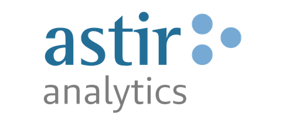
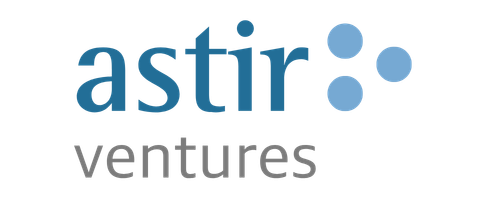

01 / THE ASTIR FAMILY
Astir IT Solutions
Technology consulting and services across CRM, information management, infrastructure and business intelligence.
Explore Astir IT SolutionsThe Astir Family
A connected family of companies, bringing together business expertise and technology experience.
Explore more01 / THE ASTIR FAMILY
Technology consulting and services across CRM, information management, infrastructure and business intelligence.
Explore Astir IT Solutions
02 / THE ASTIR FAMILY
Information systems and professional software services shaped around clients’ strategic goals.
Explore Astir Services03 / THE ASTIR FAMILY
IT consulting expertise, including GroupWare Solutions and VAP Technology Group.
Explore Astir Technologies
04 / THE ASTIR FAMILY
Actionable information and insight for marketing, sales, reporting and lead management.
Explore Astir Analytics
05 / THE ASTIR FAMILY
Funding, guidance and support to help entrepreneurial ideas move from proposal to practice.
Explore Astir Ventures